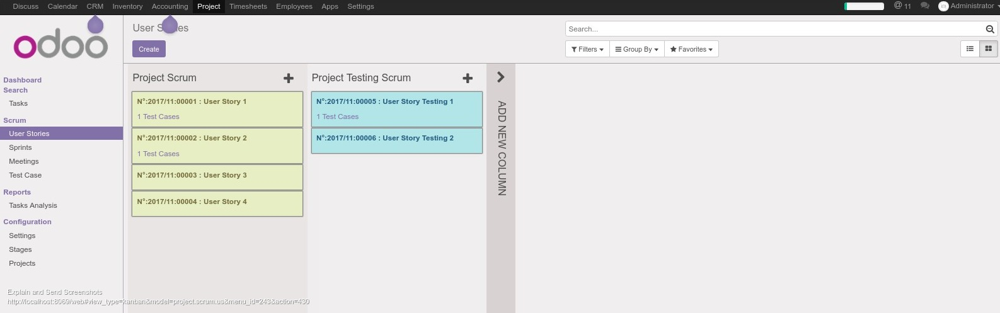

<t name="Homepage" priority="29" t-name="website.homepage">
  <t t-call="website.layout">

    <div id="wrap" class="oe_structure oe_empty">
      <div class="carousel slide mb64 mt0" id="myCarousel0">
        <ol class="carousel-indicators">
          <li class="active" data-slide-to="0" data-target="#myCarousel0"/>
          <li data-slide-to="1" data-target="#myCarousel0"/>
          <li data-slide-to="2" data-target="#myCarousel0"/>
        </ol>
        <div class="carousel-inner">
          <div class="item oe_img_bg active" style="background-image: url(&quot;http://localhost:8069/website/static/src/img/banner/mango.jpg&quot;); height:300px;">
            <div class="container">
              <div class="row content">
                <!--<h1 class="carousel-content col-sm-12 mb16 mt128 col-md-3 col-md-offset-1">Planning Work With Scrum</h1>-->
                <h1 class="carousel-content row text-center ">Planning Work With Scrum</h1>          
                <div class="carousel-img row col-xs-offset-2 ">
                  
                  
                </div>
              </div>
            </div>
          </div>
          <div class="item oe_img_bg" style="background-image: url(http://localhost:8069/website/static/src/img/banner/mango.jpg);height:300px;">
            <div class="container">
              <div class="row content">              
                <!--<h1 class="carousel-content col-sm-12 mb128 mt128 col-md-5 col-md-offset-1">Working in Teams</h1>-->          
                <h1 class="carousel-content row text-center">Working in Teams</h1>              
                <div class="carousel-img row col-xs-offset-6">
                  
                </div>
              </div>
            </div>
          </div>
          <div class="item oe_img_bg" style="background-image: url(http://localhost:8069/website/static/src/img/banner/mango.jpg);height:300px;">
            <div class="container">
              <div class="row content">
                <!--<h1 class="carousel-content col-md-6 col-sm-12 mb128 mt128">Get a good overview at your work</h1>-->
                <h1 class="carousel-content text-center">Get a good overview at your work</h1>
                <div class="carousel-img row col-xs-offset-4 ">
                  
                </div>
              </div>          
            </div>
          </div>
        </div>
        <div class="carousel-control left" data-slide="prev" data-target="#myCarousel0" href="#myCarousel0" style="width: 10%">
          <i class="fa fa-chevron-left"/>
        </div>
        <div class="carousel-control right" data-slide="next" data-target="#myCarousel0" href="#myCarousel0" style="width: 10%">
          <i class="fa fa-chevron-right" style=""/>
        </div>
      </div>
    <section class="mb12 para_large">
        <div class="oe_container">
            <div class="row ">
                <div class="text-center col-md-4">
                    <span class="fa fa-suitcase fa-5x"/>
                    <h3 class="mt8 mb0">Planning</h3>
                    Scrum is a tool that gives your team and empolyees the oportunity to plan their work in a more neat and structured way.
                </div>
                
                <div class="text-center  col-md-4">
                    <span class="fa fa-lock fa-5x" style=""/>
                    <h3 class="mt8 mb0">Roles</h3>
                    Each team member has his own role. In Scrum there are always three different roles; Product Owner, Scrum Master and the developers.
                    <div class="text-muted"/>
                </div>

                <div class="text-center  col-md-4">
                    <span class="fa fa-heart fa-5x" style=""/>
                    <h3 class="mt8 mb0 " style="">Daily Meetings.</h3>
                    Daily Meeting for a maximum of 15 minutes duration where each member of the team will have to answer three question about what he did/will do and what obsticles he faces.
                </div>
            </div>
        </div>
    </section>

        <section>          
            <div class="oe_span12 ">
                <h3 class="oe_slogan">Sprints</h3>   
                <p>
                    In Scrum you will work by sprints, where every sprint should be completed under a specific period which can vary from weeks and up to months.
                </p>
                <center>
                    
                </center> 
                <br/><br/>
            </div> 
            <br/><br/>     
        
        
            <div class="form-group">
                <div class="col-sm-10">
                <label class="control-label">This is a port and enhancement of the old project_scrum version 6.1 by OpenERP SA.</label>
            </div>  
        </section>
    </div>
  </t>
</t>

